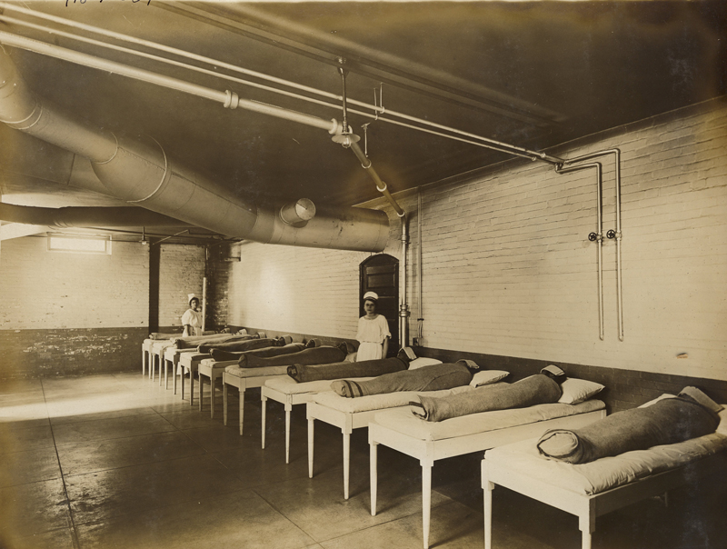

Then I saw that my body had all sorts of little tricks, such as making my hands go limp at the crucial second, which would save it, time and again, whereas if I had the whole say, I would be dead in a flash. I would simply have to ambush it with whatever sense I had left, or it would trap me in its stupid cage for fifty years without any sense at all.
Sylvia Plath · The Bell Jar · p. 204